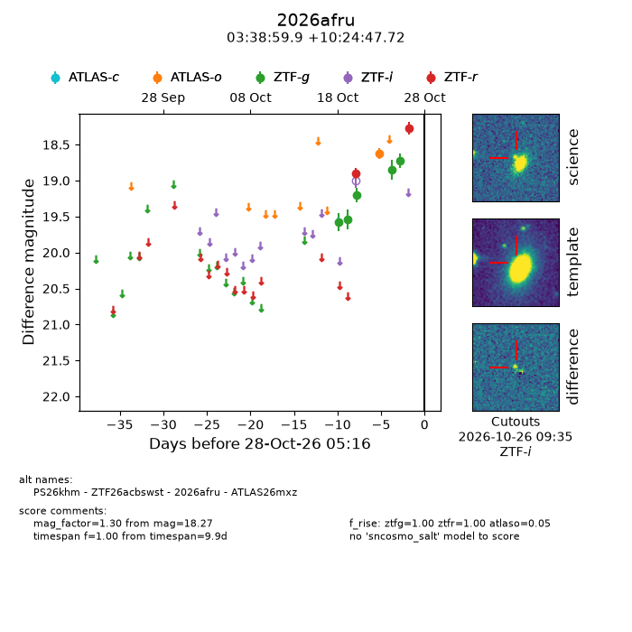
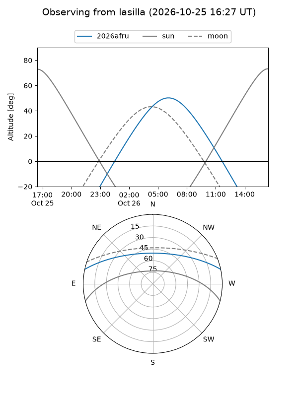
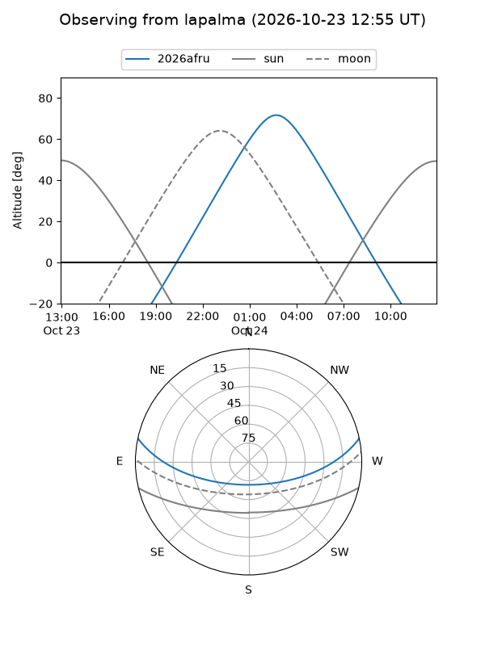
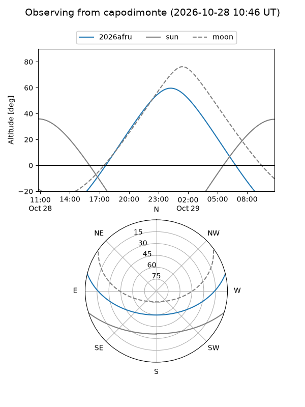
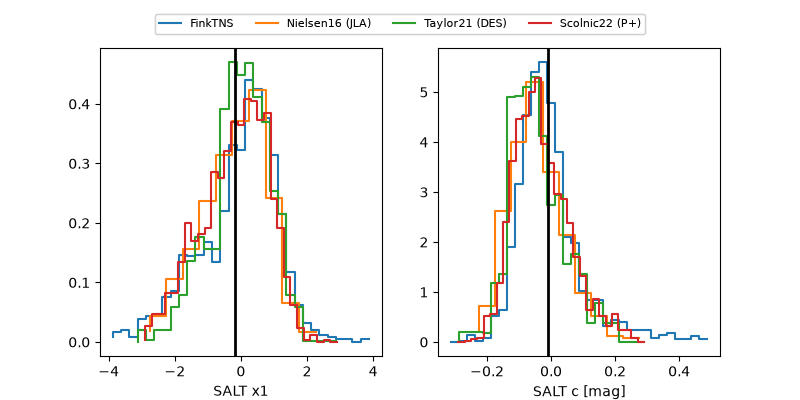

2026afru
Target 2026afru at 2026-10-28 05:18
Aliases and brokers:
FINK-ZTF: ztf.fink-portal.org/ZTF26acbswst
Lasair-ZTF: lasair-ztf.lsst.ac.uk/objects/ZTF26acbswst
ALeRCE-ZTF: alerce.online/object/ZTF26acbswst
YSE-PZ: ziggy.ucolick.org/yse/transient_detail/2026afru
TNS name: wis-tns.org/object/2026afru
Direct TNS query: direct search
alt names
ZTF26acbswst (ztf,fink_ztf)
2026afru (tns,yse)
PS26khm (panstarrs)
ATLAS26mxz (atlas)
Coordinates:
equatorial (ra, dec) = 54.7495,+10.41326
equatorial (HMS+DMS) = 03:38:59.89,+10:24:47.72
galactic (l, b) = (175.9400,-34.69459)
Flags:
peak dt:
Photometry:
last atlaso=nan, ztfg=18.73, ztfr=18.27
2 atlaso, 5 ztfg, 2 ztfr detections
Lightcurve

Visibility



Additional plots
